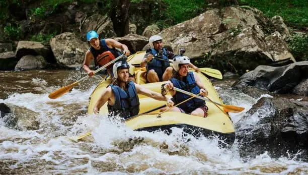
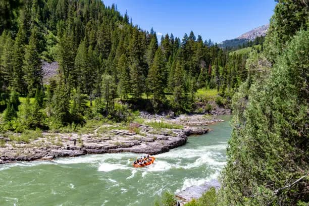
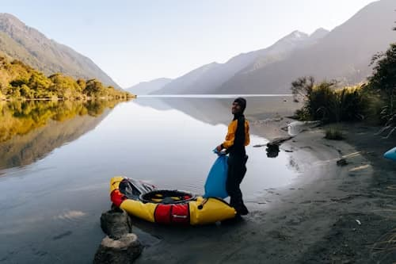
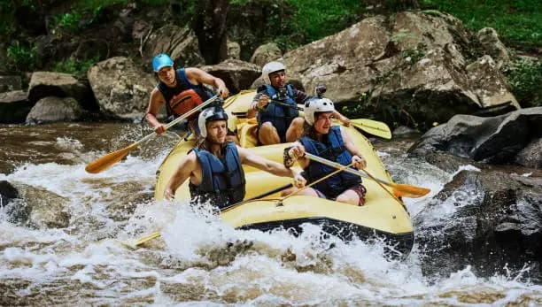
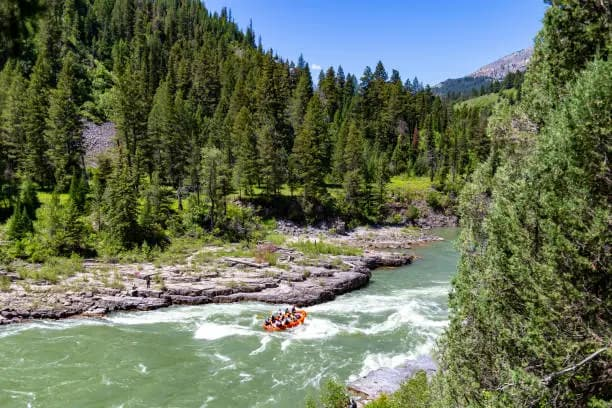
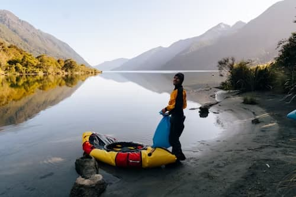

White Water Rafting Co. exists to inspire adventure, foster connection, and create unforgettable memories on the water. Our mission is to provide safe, thrilling, and accessible rafting experiences for adventurers of all skill levels, while promoting environmental stewardship and respect for nature. Guided by a creed of integrity, teamwork, and passion for the great outdoors, we are committed to empowering individuals to step outside their comfort zones and embrace the spirit of exploration. With our motto, "Ride the Rapids, Live the Moment," we strive to remind every guest that life’s greatest adventures are best experienced together, one wave at a time.

WHITE WATER RAFTING
History
White Water Rafting was founded with a passion for adventure and a love for the great outdoors. What began as a small, family-run operation over two decades ago has grown into a trusted name in river expeditions. Born from a desire to share the thrill of navigating pristine rapids and the beauty of untouched waterways, our company has guided thousands of adventurers through unforgettable journeys. From our humble beginnings to becoming a leader in the industry, White Water Rafting remains dedicated to safety, environmental stewardship, and creating lifelong memories for every guest.
Adventure Awaits You!
 




